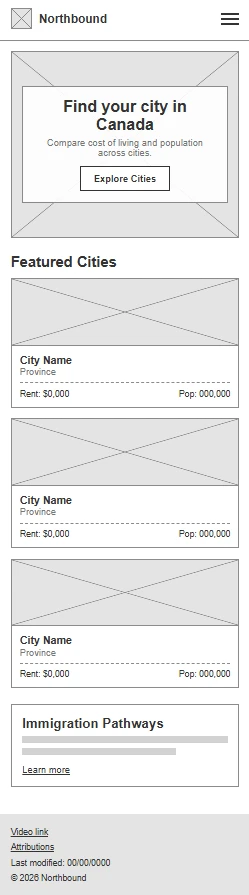
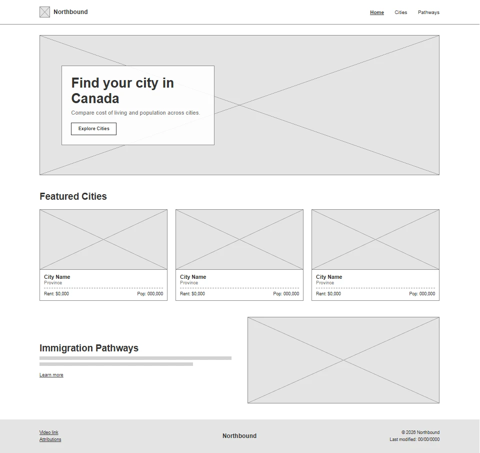

Northbound Website Plan
A guide that helps skilled workers research and compare Canadian cities before relocating.
1. Site Name
Northbound
- The name points toward Canada and forward progress, which matches the journey of a skilled worker relocating north.
- It is short, easy to remember, and works well as a logo word mark.
Optional domain idea (availability not checked): northboundguide.ca
2. Site Purpose
Northbound is an information hub that helps skilled workers research and compare Canadian cities before relocating. It explains the main immigration pathways and lets visitors compare destinations using real data.
Planned pages
- Home: introduces the guide, highlights featured cities, and links to the other pages.
- Cities: a filterable directory of 15 or more Canadian cities with province, population, average rent, immigration pathway, and live weather. Each city opens in a modal with full details.
- Pathways: explains Express Entry, the Provincial Nominee Program, and work permits, with a form to request personalized city recommendations.
- Confirmation page: displays the submitted form data after the form is sent.
3. Scenarios
Questions a visitor from the target audience might ask:
- Which Canadian city has affordable rent and good job prospects for software developers?
- What is the difference between Express Entry and the Provincial Nominee Program?
- What is the weather like right now in Calgary compared to Vancouver?
- How can I get city suggestions that match my budget and climate preference?
4. Color Scheme
The palette uses a deep navy and a maple red, inspired by Canada, with cool neutrals for readability. This document uses only these colors.
-
Pine Navy #12304a
Header and footer backgrounds, and headings.
-
Maple Red #b3202d
Accent lines under headings, call to action buttons, and hover states.
-
Glacier Blue #1f6a93
Links and secondary buttons.
-
Ink #1d2733
Paragraph and list text.
-
Snow #f5f8fb
Page background and light text on dark backgrounds.
-
White #ffffff
Card and panel surfaces, and text on Pine Navy and Maple Red.
All text and background pairs meet the WCAG AA contrast ratio of 4.5:1 or higher.
5. Typography
Both fonts come from Google Fonts. A modern geometric sans pairs with a highly readable humanist sans.
-
Montserrat
Find your city in Canada
Weights 600 and 700. Used for the site name, headings, navigation links, and buttons.
-
Source Sans 3
Compare rent, weather, and immigration pathways before you move.
Weights 400 and 600. Used for body text, lists, form labels, captions, and the footer.
6. Wireframe
Black and white sketches of the home page for a small screen and a large screen.


Home page layout notes
- Header with the logo and site name, plus the main navigation with wayfinding.
- Hero image with a short welcome message and a call to action link to the city directory.
- Three featured city cards loaded from the JSON data.
- A short pathways teaser with a link to the pathways page.
- Footer with the demo video link, the attributions link, and the last modified date.